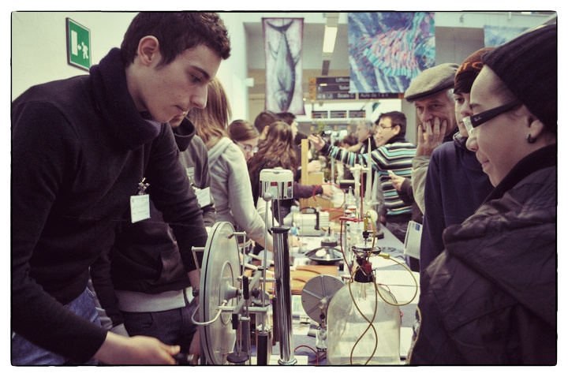
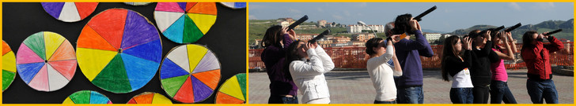
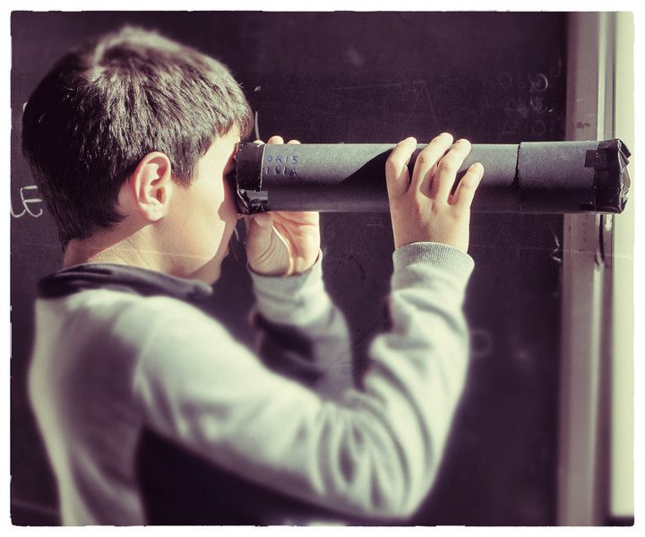
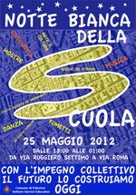

You are hereNews
News
Le ultime notizie di PalermoScienza
Aspettando "Mappare l'ambiente"
Aspettando la sesta edizione di Esperienza inSegna, eccovi alcune anticipazioni: anche quest’anno il Polididattico dell'Università degli Studi di Palermo sarà animato dagli studenti espositori, alle prese questa volta con il concetto di mappe e la presentazione di exhibit che ne riprendano il tema; saranno riproposte le conferenze-spettacolo e le rappresentazioni teatrali; vi sarà la quarta edizione del convegno Memoria scientiae.
La manifestazione si arricchirà inoltre della presenza delle tante realtà cittadine - Museo di Mineralogia, Museo Doderlein, ed altre - che in tutti questi anni hanno contribuito a renderla sempre più interessante e interattiva.
Avremo inoltre alcune novità, tra le quali: la conferenza interattiva “Mappe volanti” in cui verrà illustrato l’utilizzo dei droni per per produrre cartografia e descrivere il territorio; i laboratori organizzati dal Sistema Bibliotecario di Ateneo (SBA) che guiderà i giovani studenti alla scoperta della biblioteca come luogo di incontro tra libri, storia e gioco; “La bellezza della matematica”, mostra di exhibit matematici ideati e realizzati nell’ambito del progetto “Botteghe della scienza 2012”, vissuta come esperienza laboratoriale interattiva e… tanto altro ancora!
Al prossimo aggiornamento!

Dammi una mappa e…
"4 passi a destra, 3 in fila davanti a te, fai una giravolta e un inchino e scoprirai il tesoro!".
Domenica 10 febbraio, presso la libreria La Feltrinelli di Palermo, dalle 16,30 fino alle 18,00, gli esperti dell'associazione PALERMOSCIENZA intratterranno bambini e ragazzi con giochi sulle e con le mappe, anticipando alcune delle attività previste durante la manifestazione Esperienza inSegna, (18-24 febbraio, Università degli Studi di Palermo) giunta alla sua sesta edizione. Età consigliata: 5 - 10 anni.
L'ingresso è libero
Vi aspettiamo!
Laboratori RELAZIONI TRA STELLE
L'Associazione PALERMOSCIENZA e l'Associazione Ça Parle organizzano i laboratori “RELAZIONI TRA STELLE” rivolti a bambini e ragazzi di età compresa tra i 4 e i 13 anni.
Sabato 26 gennaio, sabato 2 febbraio e sabato 9 febbraio, dalle 9.30 alle 12.30, presso la sede dell'Associazione Ça Parle, gli operatori di PALERMOSCIENZA guideranno i partecipanti nel mondo dell'astronomia e dell'astrofisica, alla scoperta delle relazioni esistenti tra i vari tipi di stelle (che differenza c'è ad esempio tra una stella di colore blu e una stella di colore rosso?) e costruendo oggetti di semplice utilizzo – come lo spettroscopio o un termometro a cristalli liquidi – per comprendere bene e in modo diretto i concetti scientifici alla base dell’esperienza.
L'accoglienza dei bambini comincerà dalle ore 8.30 e terminerà alle ore 13.30.
La sede dell'Associazione Ça Parle si trova in via Mario Vaccaro, 4.
Per info e prenotazioni chiamare cell. 338 5629477, 388 8036127

| Allegato | Dimensione |
|---|---|
| RELAZIONI TRA LE STELLE | 358.58 KB |
3 e 4 gennaio 2013: Laboratori di astronomia al BIMPA
L’INAF-Osservatorio Astronomico di Palermo, l’Associazione PALERMOSCIENZA e il Museo dei Bambini di Palermo (BIMPA) stanno lavorando insieme per proporre nuove attività ludiche, che siano da stimolo per la crescita dei bambini, considerata nei suoi aspetti specificamente scientifici ed artistici.
In particolare, il 3 e il 4 gennaio prossimi verranno organizzati due laboratori/gioco di astronomia al Museo dei Bambini (BIMPA), in via Alloro 95.
I laboratori, dedicati a bambini dai 6 ai 12 anni, si svolgeranno dalle 9.30 alle 12.30; sarà inoltre disponibile un servizio di accoglienza dalle 8.30 alle 13.30 e una merenda a base di torte e succhi di frutta.
Si può scegliere di partecipare ad una sola giornata o ad entrambe; il costo di un singolo laboratorio è di 15 euro, ma se ci si iscriverà ad entrambi i laboratori il costo totale sarà di 25 euro. I laboratori sono riservati ad un numero massimo di 30 bambini ed e’ necessario prenotare mandando una mail a daric@astropa.inaf.it
Il 3 Gennaio 2013 affronteremo il viaggio “Dalla Terra alla Luna”.
La giornata sarà dedicata a conoscere più da vicino il nostro satellite sia con attività di role playing che con la costruzione di modellini.
Sarà ricostruito il percorso dell’Apollo 11 per raggiungere la Luna, saranno costruite la Terra e la Luna e sarà usato un modellino del razzo per segnare le varie tappe del viaggio di andata e ritorno. Si studierà il movimento del nostro satellite, si vedrà un video che spieghi le fasi lunari, aiutandosi con il role playing si simuleranno le fasi della Luna e si costruirà un modellino delle fasi.
Il laboratorio del 4 Gennaio 2013 si chiama: “C’era una volta una stella…”
L’incontro sarà dedicato ad approfondire la conoscenza delle stelle, prima fra tutte il nostro Sole. Costruiremo uno spettroscopio e un disco di Newton per familiarizzare con la scomposizione della luce. Sarà usato un planetario portatile per simulare la volta celeste; saranno costruiti un orologio notturno e un cercatore di stelle; sarà proiettato un video che mostrerà quali siano le dimensioni relative delle varie stelle e verranno usati Stellarium e delle carte stellari per imparare i nomi delle principali stelle.
Vi aspettiamo numerosi!

Esperienza inSegna 2013: Mappare l’ambiente
Per l'anno 2013 l'Associazione PALERMOSCIENZA inaugura le attività di Esperienza inSegna con la mostra Mappare l’ambiente. Essa si inserisce in un quadro di attività che l'Associazione svilupperà nell'arco di tutto l'anno e che avrà le mappe quale filo conduttore dominante.
Dal 18 al 24 febbraio 2013, il Polididattico dell'Università degli Studi di Palermo si trasformerà per l'occasione in un luogo di incontro, dove approfondire, divertendosi, temi ed esperienze scientifiche. La mostra vedrà la partecipazione attiva di studenti e docenti delle scuole della città di Palermo e della provincia. Il suo fulcro sarà l'esposizione degli exhibit scientifici progettati e costruiti dai docenti e dagli studenti e che riguarderanno tutti gli aspetti delle scienze con ricadute sull’ambiente. Tra le altre attività previste vi saranno i laboratori "Fare per capire" ideati per partecipanti di ogni ordine e grado scolastico, durante i quali il tema delle mappe verrà affrontato a più livelli.
Nelle prossime settimane avrete ovviamente maggiori dettagli.
XXII Settimana della Cultura Scientifica e Tecnologica
L'Associazione PALERMOSCIENZA partecipa alla XXII Settimana della Cultura Scientifica e Tecnologica che si svolgerà dal 15 al 21 ottobre 2012. La manifestazione, sviluppata in modo congiunto con l'INAF-Osservatorio Astronomico di Palermo e l'Università degli Studi di Palermo, si intitola "La ricerca: il nostro mondo. Un mondo migliore con la ricerca” ed è rivolta principalmente a studenti e docenti delle scuole di ogni ordine e grado, studenti e docenti universitari, studiosi e appassionati, famiglie e turisti.
L'evento inaugurale si terrà lunedì 15 dalle 20.00 alle 24.00, presso la Facoltà di Ingegneria dell'Università degli Studi di Palermo; durante la serata l'Associazione aprirà al pubblico la mostra "La bellezza della matematica" in cui saranno esposti exhibit interattivi che rendono visibili e sperimentabili concetti matematici.
Durante la manifestazionre l'Associazione sarà inoltre presente con le seguenti attività:
- sabato 20, dalle 9,30 alle 12,45: laboratori di real time per studenti della scuola secondaria di secondo grado, presso aule didattiche annesse al Museo Storico dei Motori e dei Meccanismi (laboratorio su prenotazione);
- sabato 20, dalle 16,00 alle 18,00: laboratorio artistico-scientifico per ragazzi che si terrà presso i Cantieri Culturali alla Zisa, sede della manifestazione "Fa la cosa giusta Sicilia", (19-21 ottobre) organizzato in collaborazione con la Galleria d’arte moderna (GAM) di Palermo;
- domenica 21, dalle 10,00 alle 12,30: laboratori artistico-scientifici realizzati per bambini e ragazzi in collaborazione la GAM e ospitati nel chiostro della Galleria.
Per ulteriori e dettagliate informazioni consultare i seguenti allegati:
- comunicato stampa con calendario di tutte le attività;
- locandina della manifestazione;
- mappa della Facoltà di Ingegneria;
- mappa delle varie sedi situate in Viale delle Scienze nelle quali si svolgeranno le attività.
Vi aspettiamo numerosi!

Scienza e Futuro, un racconto per immagini della giornata finale
E' passato poco meno di un mese dalla giornata di festa in cui sono intervenuti tutti i partecipanti - circa 900 studenti, 57 esperti, 43 tutor - per presentare i risultati del progetto Scienza e Futuro, tra tavola rotonda inaugurale, exhibit e poster, racconti e impressioni dell'esperienza appena trascorsa.
Sono state delle ore molto piacevoli, passate nel meraviglioso contesto del Real Albergo delle Povere di Palermo, che proviamo a raccontarvi per immagini, sperando che vi arrivi la bellezza di questa esperienza didattica.
Botteghe della scienza
A conclusione del progetto SCIENZAeFUTURO, l’Associazione PALERMOSCIENZA ha il piacere di invitarvi all’esposizione degli oggetti matematici realizzati nei laboratori Botteghe della scienza.
Tali exhibit sono il frutto di una virtuosa collaborazione tra 25 studenti del triennio di alcune scuole di Palermo e provincia, guidata da due esperti di matematica e tre designer dell’incubatore di impresa del Consorzio ARCA.
L’esposizione avrà luogo lunedì 18 giugno prossimo alle ore 16.30, presso i locali del Consorzio ARCA, sito in Viale delle Scienze, edificio 16, Palermo.

| Allegato | Dimensione |
|---|---|
| Cosa è Botteghe della Scienza | 1002.2 KB |
ScienzaeFuturo volge al termine
Da alcuni mesi l'associazione PALERMOSCIENZA, insieme all'IBIM – CNR, è impegnata nel progetto ScienzaeFuturo. Si tratta di un progetto regionale di divulgazione del sapere scientifico, coordinato dall'Istituto comprensivo statale Michelangelo Buonarroti di Palermo, per promuovere la scienza del futuro e il futuro della scienza. Ha coinvolto (approssimando un po' i numeri) 30 scuole siciliane, 900 studenti, 60 esperti, 40 tutor e 10 responsabili della didattica.
E' stata un'esperienza che ci ha dato grandi soddisfazioni e che sta purtroppo volgendo al termine.
Venerdì 1 giugno, dalle 10:00 alle 17:00 presso il “Real Albergo delle Povere” (a Palermo in Corso Calatafimi 217) si terrà la giornata conclusiva, in cui saranno presenti tutti gli "attori" di questa appassionante avventura. Verrano presentati i risultati del progetto con una sezione per gli exhibit ed una per i poster, e si terrà una tavola rotonda.
Ne diamo notizia, per il piacere di condividere il nostro percorso con chi ci segue.
Notte Bianca della Scuola
